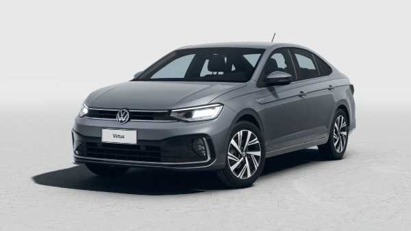

O Volkswagen Virtus é um sedã compacto produzido pela Volkswagen, conhecido pelo bom espaço interno, conforto e tecnologia. O modelo apresenta design moderno e elegante, sendo uma opção popular para quem busca um carro familiar com bom desempenho. Ele costuma ser equipado com motor 1.0 TSI turbo de três cilindros, que pode gerar cerca de 116 cv de potência, oferecendo bom equilíbrio entre desempenho e economia de combustível. Além disso, o Virtus possui bom porta-malas e diversos recursos tecnológicos, como central multimídia, painel digital e sistemas de segurança, tornando-o um sedã prático e confortável para o uso diário.
Voltar